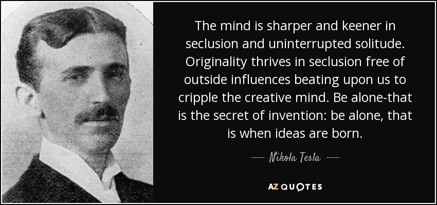

<!DOCTYPE html>
<html lang="en">
<head>
<meta charset="utf-8" />
<meta name="viewport" content="width=device-width, initial-scale=1" />
<title>2023</title>
<meta name="author" content="Salih Muhammed" />
<meta name="generator" content="Org Mode" />
<!doctype html>
<html>
  <head>
    <link rel="preconnect" href="https://fonts.googleapis.com" />
    <link rel="preconnect" href="https://fonts.gstatic.com" crossorigin />
    <link
      href="https://fonts.googleapis.com/css2?family=Amiri:ital,wght@0,400;0,700;1,400;1,700&family=Arimo:ital,wght@0,400..700;1,400..700&display=swap"
      rel="stylesheet"
    />
    <meta name="theme-color" content="#ffffff" />
    <meta charset="utf-8" />
    <meta name="theme-color" content="#ffffff" />
    <meta name="viewport" content="width=device-width, initial-scale=1.0" />
    <link rel="stylesheet" href="/~saleh/style/toc.css?v=20250130" />
    <link rel="stylesheet" href="/~saleh/style/tufte.css?v=20250130" />
    <link rel="stylesheet" href="/~saleh/style/main.css?v=20250230" />

    <script>
      document.addEventListener("DOMContentLoaded", () => {
        const p = document.querySelector("#content > p:first-of-type");
        if (p && /^[\u0600-\u06FF]/.test(p.textContent.trim())) {
          p.classList.add("arabic");
        }
      });
    </script>

    <script async data-id="101390423" src="//static.getclicky.com/js"></script>
    <noscript>
      <p>
        </p
    ></noscript>

    <!-- Import LazySizes - State-of-the-art lazy loading library -->
    <script
      src="https://cdnjs.cloudflare.com/ajax/libs/lazysizes/5.3.2/lazysizes.min.js"
      async
    ></script>

    <!-- Optional: Import plugins for better performance -->
    <script
      src="https://cdnjs.cloudflare.com/ajax/libs/lazysizes/5.3.2/plugins/unveilhooks/ls.unveilhooks.min.js"
      async
    ></script>

    <script>
      // Only run on pages with 'art_paintings_media' in the path
      if (window.location.pathname.includes("art_paintings_media")) {
        document.addEventListener("DOMContentLoaded", function () {
          // Configure LazySizes for optimal performance
          window.lazySizesConfig = window.lazySizesConfig || {};
          window.lazySizesConfig.loadMode = 1; // Load images one at a time for better performance
          window.lazySizesConfig.expand = 50; // Load images 50px before they enter viewport
          window.lazySizesConfig.expFactor = 1.5; // Expand loading area
          window.lazySizesConfig.hFac = 0.4; // Height factor for loading trigger

          // Add CSS for smooth transitions and collapsible content
          const style = document.createElement("style");
          style.textContent = `
      .lazyload,
      .lazyloading {
        opacity: 0;
        transition: opacity 0.4s ease-in-out;
      }
      .lazyloaded {
        opacity: 1;
      }
      .collapsible-content {
        overflow: hidden;
        transition: max-height 0.3s ease-out;
      }
      .collapsible-content.collapsed {
        max-height: 0 !important;
      }
      .collapsible-content.expanded {
        max-height: none;
      }
      /* Blur effect while loading (optional) */
      .lazyloading {
        filter: blur(5px);
        opacity: 0.7;
      }
      .lazyloaded {
        filter: none;
      }
    `;
          document.head.appendChild(style);

          // Find all h3 elements
          const h3Elements = document.querySelectorAll("h3");

          h3Elements.forEach(function (h3) {
            // Make h3 clickable and add icon
            h3.style.position = "relative";
            h3.style.cursor = "pointer";
            h3.style.paddingLeft = "20px";
            h3.style.userSelect = "none";

            // Add the arrow icon
            const icon = document.createElement("span");
            icon.innerHTML = "▶";
            icon.style.position = "absolute";
            icon.style.left = "0px";
            icon.style.top = "50%";
            icon.style.transform = "translateY(-50%)";
            icon.style.transition = "transform 0.2s";
            icon.style.fontSize = "0.8em";
            icon.style.color = "rgb(102, 102, 102)";
            icon.style.fontFamily = "monospace";

            h3.insertBefore(icon, h3.firstChild);

            // Find all content after this h3 until the next h3 or end of parent
            const contentElements = [];
            let nextElement = h3.nextElementSibling;

            while (nextElement && nextElement.tagName !== "H3") {
              contentElements.push(nextElement);
              nextElement = nextElement.nextElementSibling;
            }

            // Create a wrapper for smooth collapsing
            const wrapper = document.createElement("div");
            wrapper.className = "collapsible-content collapsed";
            wrapper.style.maxHeight = "0";

            // Move content elements into wrapper
            contentElements.forEach(function (element) {
              wrapper.appendChild(element);
            });

            // Insert wrapper after h3
            h3.parentNode.insertBefore(wrapper, h3.nextSibling);

            // Prepare images for LazySizes lazy loading and make them clickable
            const prepareImagesForLazyLoading = (container) => {
              const images = container.querySelectorAll("img");
              images.forEach(function (img) {
                // Only process if not already processed
                if (
                  !img.classList.contains("lazyload") &&
                  !img.dataset.processed
                ) {
                  // Store original src in data-src for LazySizes
                  if (
                    img.src &&
                    img.src !== "" &&
                    !img.src.startsWith("data:")
                  ) {
                    img.dataset.src = img.src;
                    // Use a tiny placeholder or low-quality placeholder
                    img.src =
                      'data:image/svg+xml,%3Csvg xmlns="http://www.w3.org/2000/svg" viewBox="0 0 1 1"%3E%3Crect width="1" height="1" fill="%23f0f0f0"/%3E%3C/svg%3E';
                  }

                  // Handle srcset for responsive images
                  if (img.srcset && img.srcset !== "") {
                    img.dataset.srcset = img.srcset;
                    img.srcset = "";
                  }

                  // Handle sizes attribute
                  if (img.sizes) {
                    img.dataset.sizes = img.sizes;
                  }

                  // Add LazySizes classes
                  img.classList.add("lazyload");

                  // Make image clickable - add cursor pointer
                  img.style.cursor = "pointer";

                  // Add click handler to open image in new tab
                  img.addEventListener("click", function (e) {
                    e.preventDefault();
                    e.stopPropagation(); // Prevent triggering h3 collapse

                    // Get the actual image URL (either from src or data-src)
                    let imageUrl = this.src;
                    if (this.dataset.src && !this.src.startsWith("data:")) {
                      imageUrl = this.dataset.src;
                    } else if (
                      this.src.startsWith("data:") &&
                      this.dataset.src
                    ) {
                      imageUrl = this.dataset.src;
                    }

                    // Open image in new tab
                    if (imageUrl && !imageUrl.startsWith("data:")) {
                      window.open(imageUrl, "_blank");
                    }
                  });

                  // Mark as processed
                  img.dataset.processed = "true";

                  // Maintain aspect ratio to prevent layout shift
                  if (!img.style.aspectRatio && img.width && img.height) {
                    img.style.aspectRatio = img.width + "/" + img.height;
                  }
                }
              });
            };

            // Prepare all images in this section for lazy loading
            prepareImagesForLazyLoading(wrapper);

            // Track collapsed state
            let isCollapsed = true;
            let hasBeenExpanded = false;

            // Add click handler
            h3.addEventListener("click", function (e) {
              e.preventDefault();

              if (isCollapsed) {
                // Expand: show content and activate lazy loading
                icon.style.transform = "translateY(-50%) rotate(90deg)";
                wrapper.classList.remove("collapsed");
                wrapper.classList.add("expanded");
                wrapper.style.maxHeight = wrapper.scrollHeight + "px";

                // Only activate LazySizes for this section when first expanded
                if (!hasBeenExpanded) {
                  // Trigger LazySizes to check for images in this newly visible section
                  if (window.lazySizes) {
                    // Force LazySizes to check all images in this wrapper
                    const lazyImages = wrapper.querySelectorAll(".lazyload");
                    lazyImages.forEach((img) => {
                      // Add to LazySizes queue
                      window.lazySizes.loader.unveil(img);
                    });
                  }
                  hasBeenExpanded = true;
                }

                isCollapsed = false;

                // Recalculate height after images potentially load
                setTimeout(() => {
                  if (!isCollapsed) {
                    wrapper.style.maxHeight = wrapper.scrollHeight + "px";
                  }
                }, 100);
              } else {
                // Collapse: hide content
                icon.style.transform = "translateY(-50%) rotate(0deg)";
                wrapper.classList.remove("expanded");
                wrapper.classList.add("collapsed");
                wrapper.style.maxHeight = "0";

                isCollapsed = true;
              }
            });

            // Listen for LazySizes events to adjust height dynamically
            wrapper.addEventListener("lazyloaded", function (e) {
              if (!isCollapsed) {
                // Adjust wrapper height when images load
                setTimeout(() => {
                  wrapper.style.maxHeight = wrapper.scrollHeight + "px";
                }, 50);
              }
            });
          });
        });
      }
    </script>

    <script>
      (function () {
        "use strict";

        // Check if current page should have the formatting applied
        function shouldApplyFormatting() {
          const path = window.location.pathname;

          // Check if path matches our target patterns
          return (
            path === "/~saleh/stack" ||
            path === "/~saleh/stack.html" ||
            path.startsWith("/~saleh/sh/")
          );
        }

        // Only proceed if we're on a target page
        if (!shouldApplyFormatting()) {
          return;
        }

        // Add CSS styles
        function addStyles() {
          const style = document.createElement("style");
          style.textContent = `
      /* Basic styling for entries */
      .outline-3 {
        margin-bottom: 1.5em;
        line-height: 1.5;
      }

      /* Style for reconstructed single paragraph */
      .entry-paragraph {
        margin: 0;
        line-height: 1.5;
        direction: inherit;
        unicode-bidi: plaintext;
      }

      /* Style for date - gray and nice */
      .entry-date {
        color: #666;
        font-size: 0.9em;
        margin-right: 0.5em;
      }

      /* Style for tag at end - gray and in parentheses */
      .entry-tag {
        display: inline !important;
        color: #666;
        margin-left: 0.5em;
      }

      /* Ensure all children stay inline */
      .entry-tag * {
        display: inline !important;
      }

      /* Override any existing tag styles */
      .entry-tag p,
      .entry-tag div {
        display: inline !important;
        margin: 0 !important;
        padding: 0 !important;
      }


      /* Hide block elements that will be moved */
      .outline-3 .moved-block {
        display: block;
        margin: 0.5em 0;
      }

      /* Ensure proper anchor target visibility */
      .outline-3[id] {
        scroll-margin-top: 20px;
      }
    `;
          document.head.appendChild(style);
        }

        // Extract ID from container div
        function extractIdFromContainer(entry) {
          const containerId = entry.id;
          if (containerId && containerId.startsWith("outline-container-")) {
            return containerId.replace("outline-container-", "");
          }
          return null;
        }

        // Apply the formatting transformation
        function applyFormatting() {
          // Process each entry
          const entries = document.querySelectorAll(".outline-3");

          entries.forEach((entry, index) => {
            // Extract the anchor ID from the container before transformation
            const anchorId = extractIdFromContainer(entry);

            // Extract components
            const h3 = entry.querySelector("h3");
            const notes = entry.querySelector(".notes");
            const outlineText = entry.querySelector(".outline-text-3");
            const tag = entry.querySelector(".tag");

            if (!h3 || !outlineText) return;

            // Get title text (preserve any TODO/DONE prefixes and links)
            let titleText = h3.innerHTML;

            // Get timestamp
            let timestampText = "";
            if (notes) {
              const timestamp = notes.querySelector(".timestamp");
              if (timestamp) {
                timestampText = timestamp.textContent;
              }
            }

            // Get content paragraphs (excluding notes, tag, and backlinks)
            const contentParagraphs = [];
            const blockElements = [];
            const backlinks = entry.querySelector(".BACKLINKS");

            Array.from(outlineText.children).forEach((child) => {
              if (
                child.classList.contains("notes") ||
                child.classList.contains("tag") ||
                child.classList.contains("BACKLINKS")
              ) {
                return; // Skip these - they'll be handled separately
              }

              if (child.tagName === "P") {
                contentParagraphs.push(child.innerHTML);
              } else if (
                child.tagName === "UL" ||
                child.tagName === "OL" ||
                child.tagName === "BLOCKQUOTE" ||
                child.tagName === "PRE" ||
                child.tagName === "DL" ||
                child.classList.contains("epigraph")
              ) {
                blockElements.push(child.outerHTML);
              } else if (
                child.tagName === "DIV" &&
                child.classList.contains("epigraph")
              ) {
                blockElements.push(child.outerHTML);
              }
            });

            // Get tag HTML (preserve links and formatting)
            let tagHtml = "";
            if (tag) {
              tagHtml = tag.outerHTML;
            }

            // Construct the new single paragraph
            let newContent = "";

            // Add date at the start (gray)
            if (timestampText) {
              newContent +=
                '<span class="entry-date">' + timestampText + "</span>";
            }

            // Add title with emdash
            newContent += titleText + " — ";

            // Add content paragraphs
            newContent += contentParagraphs.join(" ");

            // Add tag at the end in parentheses (preserve HTML but force inline)
            if (tagHtml) {
              // Extract just the inner content and wrap it properly
              let tagContent = tag.innerHTML;
              newContent +=
                ' <span class="entry-tag">(' + tagContent + ")</span>";
            }

            // Create new paragraph element
            const newParagraph = document.createElement("p");
            newParagraph.className = "entry-paragraph";
            newParagraph.innerHTML = newContent;

            // Clear the entry
            entry.innerHTML = "";

            // Preserve the anchor ID by setting it on the transformed entry
            if (anchorId) {
              entry.id = anchorId;
            }

            // Add backlinks FIRST so they can float to the right
            if (backlinks) {
              entry.appendChild(backlinks.cloneNode(true));
            }

            // Then add the main paragraph
            entry.appendChild(newParagraph);

            // Add any block elements after the paragraph
            blockElements.forEach((blockHtml) => {
              const blockDiv = document.createElement("div");
              blockDiv.className = "moved-block";
              blockDiv.innerHTML = blockHtml;
              entry.appendChild(blockDiv);
            });

            // Add separator after each entry (except the last one)
            if (index < entries.length - 1) {
              const separator = document.createElement("hr");
              separator.style.margin = "1em 0";
              separator.style.border = "none";
              separator.style.borderTop = "1px solid #ccc";
              entry.appendChild(separator);
            }
          });
        }

        // Initialize when DOM is ready
        function init() {
          addStyles();

          if (document.readyState === "loading") {
            document.addEventListener("DOMContentLoaded", applyFormatting);
          } else {
            applyFormatting();
          }
        }

        // Start the initialization
        init();
      })();
    </script>
  </head>
  <body></body>
</html>
</head>
<body>
<div id="preamble" class="status">
<div id="preamble" class="status">
  <div class="header" style="
    display: block !important;!i;!;
">
<a href="/">
<h1 class="title" style="
margin-block-start: auto;
    color: black;
">Hereby, all birds fly</h1>
      </a>
      <nav class="site-nav">
        <a href="/~saleh/p/">all posts</a>
        <span>•</span>
        <a href="/~saleh/stack.html">short posts</a>
        <span>•</span>
        <a href="/~saleh/fullbooks.html">books</a>
        <span>•</span>
        <a href="/~saleh/a.html#2ar8en10n2k0">anthology</a>
        <span>•</span>
        <a href="/~saleh/pgp.html">PGP key</a>
        <span>•</span>
        <a href="https://www.admonymous.co/larrasket">leave a message</a>
      </nav>
<hr class="header-divider" style="margin-block-end: -1em;">
  </div>
</div>
</div>
<div id="content" class="content">
<header>
<h1 class="title">2023</h1>
</header>
<figure id="org28fd668">


</figure>
<div id="outline-container-org5f7c386" class="outline-2">
<h2 id="org5f7c386">Posts</h2>
<div class="outline-text-2" id="text-org5f7c386">
</div>
<div id="outline-container-mpel2370tfk0" class="outline-3">
<h3 id="mpel2370tfk0">BBC iPlayer</h3>
<div class="outline-text-3" id="text-mpel2370tfk0">
<div class="notes"> <p>
<span class="timestamp-wrapper"><span class="timestamp">[2023-12-19 Tue 05:54]</span></span>
</p>
 </div>
<p>
I just learned about BBC&rsquo;s iPlayer documentaries today, really quality content.
I used to watch some of these when I was younger.
</p>
</div>
</div>
<div id="outline-container-fnt2cp8171k0" class="outline-3">
<h3 id="fnt2cp8171k0">A Memory with Org-mode inline math</h3>
<div class="outline-text-3" id="text-orgc1ba34e">
<ul class="org-ul">
<li><span class="timestamp-wrapper"><span class="timestamp">[2025-09-27 Sat 00:04]</span></span> <br>
Just remembered something funny that happened a long time ago too. Not very related to this story but I will put it here anyway, I was trying out some new themes for Emacs a long time ago, and most of the themes that you will try, would have this warnning shoutted out by Emacs that choosing this theme can actually execute Lisp code, which is correct and should be carefully considered. However, between switching to the new theme from your current theme, Emacs switches to the default Emacs theme. And I fell in love! I didn&rsquo;t know that this was the default theme, I thought that this was the one I had just chosen then (the message was omitted for unkown reason). The next day I spent the whole day debugging why my theme is now black.</li>
</ul>
<div class="notes"> <p>
<span class="timestamp-wrapper"><span class="timestamp">[2023-12-03 Sun 04:04]</span></span>
</p>
 </div>
<div class="UNEXPORTEDTAG" id="org8a79ea4">
<p>
Memories
</p>

</div>

<p>
It&rsquo;s always recommended to check what your vendors/origins provide before
looking for third-party solution. I learnt that the hard way years ago when I
was in the Digital Signal Processing class and trying to take math notes, I was
new to Org-mode and the Emacs rabbit whole that time and I wanted to use
Org-mode for this mission. I came across <a href="https://gitlab.com/matsievskiysv/math-preview">this</a> program from reddit, it&rsquo;s called
&ldquo;math-preview&rdquo;, I thought that this was the utility I need to write LaTeX
equations inside Org. I spent hours trying to install it (npm tragedy), and even
after getting it to work, I was getting Elisp errors inside Emacs. I do not
remember how it ended though, perhaps someone told me that Emacs does what I
wanted out of the box? Anyway. It&rsquo;s only a fun memory now <code>:)</code>
</p>
</div>
</div>
<div id="outline-container-orge031368" class="outline-3">
<h3 id="orge031368">Hi</h3>
<div class="outline-text-3" id="text-orge031368">
<div class="notes"> <p>
<span class="timestamp-wrapper"><span class="timestamp">[2023-11-29 Wed 05:07]</span></span>
</p>
 </div>
</div>
</div>
<div id="outline-container-bkuf5ac0fzj0" class="outline-3">
<h3 id="bkuf5ac0fzj0">Reconsidering SBCL</h3>
<div class="outline-text-3" id="text-org919466e">
<div class="notes"> <p>
<span class="timestamp-wrapper"><span class="timestamp">[2023-09-16 Sat 02:36]</span></span>
</p>
 </div>
<div class="tag" id="org7da6dc5">
<p>
This section was labeled under, or is related to <a href="../t/programming.html#4u5664n02wj0">Programming</a>
</p>

</div>
<p>
I got some emails about my last recent post <a href="../d/languages.html#jb9efrq00xj0">The Prefect Programming Language</a>
that made me reconsider Common Lisp again. I really love writing Lisp, it&rsquo;s
different and I always wished if I could use it for many things, however, the
problems I talked about (error handling, concurrency, static compiling) were
always on my way. I will start by looking for an idiomatic way to handle errors,
typically checking.<label for="1" class="margin-toggle sidenote-number"></label><input type="checkbox" id="1" class="margin-toggle"/><span class="sidenote">Peter Seibel, <i>Practical Common Lisp</i>, Books for Professionals by Professionals; the Expert’s Voice in Programming Languages (Apress, 2011), <a href="https://libgen.li/file.php?md5=437b340478deaeaee940a90b655ddc55">https://libgen.li/file.php?md5=437b340478deaeaee940a90b655ddc55</a>.</span> Update: Yeah, sadly didn&rsquo;t change my mind.
</p>
</div>
</div>
<div id="outline-container-org94f7a88" class="outline-3">
<h3 id="org94f7a88">Sunday, 21 May 2023</h3>
<div class="outline-text-3" id="text-org94f7a88">
<div class="notes"> <p>
<span class="timestamp-wrapper"><span class="timestamp">[2023-05-21 Sun 21:09]</span></span>
</p>
 </div>
<pre class="example" id="org6d76af2">
Salih Muhammed, [5/21/23 6:12 PM]
watermelon is a gift from God man
Especially in this hot weather.

Salih Muhammed, [5/21/23 6:13 PM]
https://imgur.com/a/LhzrBqf

Bell Pepper, [5/21/23 6:38 PM]
agree it's good

Bell Pepper, [5/21/23 6:39 PM]
not when you have a python exception on the background though
</pre>

<p>
:)
</p>
</div>
</div>
<div id="outline-container-org4eb0827" class="outline-3">
<h3 id="org4eb0827">Amor Fati</h3>
<div class="outline-text-3" id="text-org4eb0827">
<ul class="org-ul">
<li><span class="timestamp-wrapper"><span class="timestamp">[2025-11-29 Sat 18:38]</span></span> <br>
:). Still doing it.</li>
</ul>
<div class="notes"> <p>
<span class="timestamp-wrapper"><span class="timestamp">[2023-05-17 Wed 23:33]</span></span>
</p>
 </div>
<p>
<a href="../i/old/fati.png">Leaving Emacs splash image for Amor Fati</a>. I think it looks much more lovely this
way, forby a perpetual remainder of the most precious principle that I&rsquo;ve ever
learned; Amor Fati!
</p>
</div>
</div>
<div id="outline-container-1g48iao02wj0" class="outline-3">
<h3 id="1g48iao02wj0">About &rsquo;Book Communities&rsquo;</h3>
<div class="outline-text-3" id="text-org87a519d">
<div class="notes"> <p>
<span class="timestamp-wrapper"><span class="timestamp">[2023-03-26 Sun 09:45]</span></span>
</p>
 </div>
<div class="BACKLINKS" id="org9ebf1d4">
<p>
This section was referenced in Reading Don Quixote and <a href="../rlfo.html#p6s5gi81a3k0">Reading List (for others)</a>.
</p>

</div>

<div class="tag" id="org7d42d53">
<p>
This section was labeled under, or is related to <a href="../t/modus.html#ydb1kfn02wj0">Modus Vivendi</a>
</p>

</div>

<div class="epigraph"><blockquote>
<p>
ولو كانت الكُتُب تُلتقى بصفتِها كُتباً، لا بصفتِها غرائز ورغبات، لتغيّر الاقتصاد السياسي
للكتُب كُليّة. والكُتبُ تخلق أثرَها ليس بما فيها، بل بالرّغبات التي تخلُقُ بوالرّغبات التي
تُلصَقُ بها.
</p>

<p>
— عباس ابراهام.
</p>

</blockquote></div>

<p>
I find the &rsquo;books community&rsquo; (wherever it is, goodreads or some social network
groups) to be one of the most asinine and silly ideas I have ever seen. Books
are about ideas, not about books themselves. Who do you think
might be responsible for that reducing of books into mere objects fixated upon
themselves rather than their profound ideas? Those who were too indolent
to comprehend the rudimentary fundamentals of them. &ldquo;books did not
work for me,&rdquo; says some dropout from a preparatory school or whatever, they saw
books merely as inanimate objects that contained some inconsequential material.
This is the essence of the term &rsquo;bookworm,&rsquo; a decent description by an
individual who was unable to grasp someone else&rsquo;s discipline (some philosophical
idea, mathematical branch, physic, or anything) that happened to be written in a
collection of papers (book) and, therefore, reduced it to a level they could
comprehend - that being books, not ideas on them. The reasons underlying the
formation of these communities are purely pseudointellectuality. Books are not about
books. It is the ideas contained therein that possess significance, not the
books themselves. If those ideas were introduced somewhere else that have more
features than the print text format, no one would read books.
</p>
</div>
</div>
<div id="outline-container-bek89831uxj0" class="outline-3">
<h3 id="bek89831uxj0">Stop naming your libraries.</h3>
<div class="outline-text-3" id="text-org2b48557">
<div class="notes"> <p>
<span class="timestamp-wrapper"><span class="timestamp">[2023-08-22 Tue 04:45]</span></span>
</p>
 </div>
<div class="BACKLINKS" id="orgb6d6235">
<p>
This section was referenced in <a href="../stack.html#byb2fy71zpk0">&ldquo;Clean Architecture&rdquo;</a> and <a href="../p/namings.html#v192vmb1ask0">Programmers and software developers lost the plot on naming their tools</a>.
</p>

</div>

<div class="tag" id="org4a6afcb">
<p>
This section was labeled under, or is related to <a href="../t/programming.html#4u5664n02wj0">Programming</a>
</p>

</div>

<p>
A startup or the like would be vastly interested in having a name that is easy
to remember and not necessarily expressive, such as viber, YouTube, Google,
etc., which is understandable, what I can never understand why would a software
library do so? Why having a library named <a href="https://github.com/ProtonMail/gluon">glun</a> or <a href="https://github.com/maxpert/marmot">marmot</a>, can you guess which
one of these is the IMAP server and which is distributed SQLite replicator? This
does not make any sense. Imagine if you are talking with your team about a
workflow that involves a set of these application &ldquo;the server runs <a href="https://github.com/olivia-ai/olivia">oliva</a> which
uses <a href="https://github.com/abusomani/go-palette">palette</a> to make the <a href="https://github.com/cenkalti/rain">rain</a> interface looks better&rdquo;, a segment of my poor
brain processing power would be already RIP processing what these strange words
are supposed to mean before actually start thinking about the main statement. I
believe that the domination of this type of naming (random names of mascots or
anime girls) is relatively new, most old software had either a very meaningful
name (cat-concatenation) or at least a name to which you can link (PostgreSQL).
Now an assignment for you, try to guess what does the software named <a href="https://github.com/posativ/isso">isso</a> do?
Please always give your software/library a meaningful name. Stop using anime
girls names for naming utilities.
</p>

<p>
Update: try to tell what do these pieces do before clicking the link:
</p>

<ul class="org-ul">
<li><a href="https://github.com/mamba-org/quetz">quetz</a></li>
<li><a href="https://github.com/GoogleChromeLabs/squoosh">squoosh</a></li>
<li><a href="https://github.com/mamba-org/mamba">mamba</a></li>
<li><a href="https://github.com/coq-concurrency/pluto">pluto</a></li>
<li><a href="https://github.com/mamba-org/boa">boa</a></li>
<li><a href="https://github.com/radian-software/apheleia">apheleia</a></li>
<li><a href="https://github.com/ThreeDotsLabs/watermill">watermill</a></li>
</ul>
</div>
</div>
<div id="outline-container-orgc1d9f1d" class="outline-3">
<h3 id="orgc1d9f1d">#</h3>
<div class="outline-text-3" id="text-orgc1d9f1d">
<p>
Those men who are in themselves destinies, and whose advent is the advent of
fate, the whole race of heroic bearers of burdens: oh! how heartily and gladly
would they have respite from themselves for once in a while!—how they crave
after stout hearts and shoulders, that they might free themselves, were it but
for an hour or two, from that which oppresses them! And how fruitlessly they
crave! &#x2026; They wait; they observe all that passes before their eyes: no man
even cometh nigh to them with a thousandth part of their suffering and passion,
no man guesseth to what end they have waited&#x2026;. At last, at last, they learn
the first lesson of their life: to wait no longer; and forthwith they learn
their second lesson: to be affable, to be modest; and from that time onwards to
endure everybody and every kind of thing—in short, to endure still a little more
than they had endured theretofore.
</p>
</div>
</div>
<div id="outline-container-vw1jrno02wj0" class="outline-3">
<h3 id="vw1jrno02wj0">Navigating Computing Boundaries</h3>
<div class="outline-text-3" id="text-org3e5c4a1">
<div class="notes"> <p>
<span class="timestamp-wrapper"><span class="timestamp">[2023-07-13 Thu 03:28]</span></span>
</p>
 </div>
<div class="BACKLINKS" id="orgc2c100b">
<p>
This section was referenced in <a href="../d/computing.html#wtn40en02wj0">Computers are no longer used</a>.
</p>

</div>

<div class="tag" id="orgd1d8d7c">
<p>
This section was labeled under, or is related to <a href="../t/programming.html#4u5664n02wj0">Programming</a>, <a href="#zhti90o02wj0">What We Lost</a>, and <a href="../d/computing.html#wtn40en02wj0">Computers Are No Longer Used</a>
</p>

</div>

<p>
People usually misunderstand the boundaries of computing i.e. what a computer is actually capable of. Due to the mediocre state of software industry that reinforces computing illiteracy, this is not going to change any soon. An example of this is ad-blocking, some people won&rsquo;t bother checking whether it is possible to purge annoying ads from their experience, they just accept it as the way it works. This is true for other aspects too, there was a reason why people were surprised by the LLM thing. IMHO this is the main reason why federated social networks such as Pleroma and Mastodon will never become a thing, because it&rsquo;s too complicated for normies to understand that such a thing is even possible. They already have their own understanding of how computing should be done.
</p>
</div>
</div>
<div id="outline-container-y5njt5c0fzj0" class="outline-3">
<h3 id="y5njt5c0fzj0">ScienceDirect overviews</h3>
<div class="outline-text-3" id="text-org87fd480">
<div class="notes"> <p>
<span class="timestamp-wrapper"><span class="timestamp">[2023-06-24 Sat 23:26]</span></span>
</p>
 </div>
<p>
<a href="https://www.sciencedirect.com/">ScienceDirect.om</a> have some nice pages called &ldquo;overview&rdquo; that are created &ldquo;using
heuristic and machine-learning approaches to extract relevant information from
our extensive collection of content&rdquo;. I usually skip browsing the site itself
and jump to the dio directly through some scripting shenanigans, I think this is
why I missed it for very long time. It&rsquo;s really useful that I wanted to let you
know that it does exist.
</p>
</div>
</div>
<div id="outline-container-7obebmc1b4k0" class="outline-3">
<h3 id="7obebmc1b4k0">Freedman&rsquo;s Pursuit of Purity</h3>
<div class="outline-text-3" id="text-orge888b33">
<div class="notes"> <p>
<span class="timestamp-wrapper"><span class="timestamp">[2023-06-11 Sun 05:56]</span></span>
</p>
 </div>
<div class="tag" id="orgf9aaf93">
<p>
This section was labeled under, or is related to <a href="../h/n.html#loqfv5p02wj0">Nietzsche, Unveiling the Depths of Human Existence</a>
</p>

</div>
<p>
&ldquo;To purify himself, is still necessary for the freedman of the spirit. Much of the prison and the mould still remaineth in him: pure hath his eye still to become.&rdquo; ~ Thus Spoke Zarathustra
</p>
</div>
</div>
<div id="outline-container-org1781774" class="outline-3">
<h3 id="org1781774">Facebook conversation</h3>
<div class="outline-text-3" id="text-org1781774">
<div class="notes"> <p>
<span class="timestamp-wrapper"><span class="timestamp">[2023-06-07 Wed 17:54]</span></span>
</p>
 </div>
<p>
A fake Jeff Bezos, a crazy Selma, a fake President Joe Biden and a fake
Ukrainian Evgeny Chugunov. <a href="../i/jef.png">Very harmonic and civilized Facebook conversation</a>.
</p>
</div>
</div>
<div id="outline-container-b9a1a6c0fzj0" class="outline-3">
<h3 id="b9a1a6c0fzj0">Trying history trees</h3>
<div class="outline-text-3" id="text-org64ba722">
<ul class="org-ul">
<li><span class="timestamp-wrapper"><span class="timestamp">[2025-11-29 Sat 18:32]</span></span> <br>
Reflecting on this now as a full time Safari user makes me feel weird.</li>
</ul>
<div class="notes"> <p>
<span class="timestamp-wrapper"><span class="timestamp">[2023-06-03 Sat 02:56]</span></span>
</p>
 </div>
<p>
I don&rsquo;t use web history. I think it is one of the worst features that were
included in the new standards of web browsers. When web history was a thing for
the first time it was a little bit useful since there were no search engines to
use, so you would either memorize the URLs that you are using or retrieving them
from the history. Now it&rsquo;s only included as a pretext for proprietary browsers
to spy on you. However, I still believe it is a very bad idea to keep browsing
history even if you compile your browser by yourself. Imagine keeping a camera
on your &rsquo;safe&rsquo; room that records private shots of you, but it&rsquo;s totally safe
since your room is very safe place so none will be able to gain access to it.
This seems fine but why even bother guarding such a thing that is even not that
useful, but could be very dangerous too if someone seizes? This is the same way
I treat (or used to treat) browsing history. Recently I was reading the <a href="https://nyxt.atlas.engineer/">nyxt</a>
browser specifications and found out that they are using tree-style-like history
instead of linear history that other browsers use. I decided to give it a try
(the tree history not nyxt, it&rsquo;s a RIP already to me) to see how can it be
useful. I noticed that I&rsquo;m being a little more productive because I tend to
browse less of shitty web content when I know that my history is recorded,
perhaps thinking that someone will review my history and judge me :). I will
update here later to inform you, dear readers, whether it does worth keeping
this dangerous thing in your machine.
</p>
</div>
</div>
<div id="outline-container-yxfdp460vrk0" class="outline-3">
<h3 id="yxfdp460vrk0">Quite by day</h3>
<div class="outline-text-3" id="text-yxfdp460vrk0">
<div class="notes"> <p>
<span class="timestamp-wrapper"><span class="timestamp">[2023-03-03 Fri 02:56]</span></span>
</p>
 </div>
<div class="tag" id="org5edaedb">
<p>
This section was labeled under, or is related to <a href="../t/modus.html#ydb1kfn02wj0">Modus Vivendi</a> and Poetry
</p>

</div>
<div class="epigraph"><blockquote>
Blest, who can unconcernedly find<br>
Hours, days, and years slide soft away,<br>
In health of body, peace of mind,<br>
Quiet by day.<br>
<br>
Thus let me live, unseen, unknown,<br>
Thus unlamented let me die,<br>
Steal from the world, and not a stone<br>
Tell where I lie.<br>

</blockquote></div>

<p>
Composed c. 1700. First published 1717.
</p>
</div>
</div>
<div id="outline-container-zhti90o02wj0" class="outline-3">
<h3 id="zhti90o02wj0">What We Lost</h3>
<div class="outline-text-3" id="text-orgd9a2c0e">
<div class="notes"> <p>
<span class="timestamp-wrapper"><span class="timestamp">[2023-02-20 Mon 09:59]</span></span>
</p>
 </div>

<div class="BACKLINKS" id="org31cda88">
<p>
This section was referenced in <a href="#vw1jrno02wj0">Navigating Computing Boundaries</a>, and in 1 other private note.
</p>

</div>

<div class="tag" id="orge7d3ecc">
<p>
This section was labeled under, or is related to <a href="../t/programming.html#4u5664n02wj0">Programming</a>
</p>

</div>

<p>
It makes me so curibus whatever happened in some era of software
history that converted user from an intelligent adventurer that we
have to consider their understanding, give them warnings and provide them with
helpful logs; into a really stupid creature that live without a mind, and we
have to restrict ane control.  We have to hide error messages (not to &ldquo;expose internals&rdquo;)
and popup a stupid so-called friendly &ldquo;oh no, something went wrong, we are so
sorry for that!&rdquo;. The reason why I don&rsquo;t understand the current situation of software industry is
we already have been through it. Related: <a href="../d/computing.html#wtn40en02wj0">Computers Are No Longer Used</a>
</p>
</div>
</div>
<div id="outline-container-org519aab0" class="outline-3">
<h3 id="org519aab0">I hate CSS v2</h3>
<div class="outline-text-3" id="text-org519aab0">
<div class="notes"> <p>
<span class="timestamp-wrapper"><span class="timestamp">[2023-02-19 Sun 22:55]</span></span>
</p>
 </div>
<p>
Okay I&rsquo;ve to add context if you just read the previous entry (12 Feb 2023). So
yeah, basically I worked on scrapping CSS from various places and mixing them to
produce the most elegant blog you have ever seen, yeah it worked well and it was
&ldquo;fancy&rdquo;. But you know what? CSS is a bloat, welcome to my new world area. Now
I&rsquo;m finally satisfied.
</p>
</div>
</div>
<div id="outline-container-org5435a30" class="outline-3">
<h3 id="org5435a30">I hate css</h3>
<div class="outline-text-3" id="text-org5435a30">
<div class="notes"> <p>
<span class="timestamp-wrapper"><span class="timestamp">[2023-02-12 Sun 08:06]</span></span>
</p>
 </div>
<p>
New look, what do you think? I realized recently how not doing a CSS web project
when I was twelve had ruined or radically changed how my methods of using
computers, I believe that it was in a better way, however I&rsquo;m really curious to
know about that Saleh who would be able to write some creative css, who wouldn&rsquo;t
alienate from visual development because he can&rsquo;t stand writing CSS in XML.
Obviously I didn&rsquo;t write the css this time but used an inventive mix between my
old style and simtemapping with something I&rsquo;ve found on the internet. While I
was doing this, I really wished if I had considered it thoroughly when I decided
to migrate from hugo to emacs. Lisp is a great language to get your hands dirty
with, but like mostly every language out there it requires some amount of
periodic usage to keep your acme in writing master programs.
</p>

<p>
Anyway, have a nice week.
</p>
</div>
</div>
<div id="outline-container-7d23d2o02wj0" class="outline-3">
<h3 id="7d23d2o02wj0">Message to Self</h3>
<div class="outline-text-3" id="text-org29cb64a">
<div class="notes"> <p>
<span class="timestamp-wrapper"><span class="timestamp">[2023-01-02 Mon 02:54]</span></span>
</p>
 </div>

<div class="tag" id="orgab77499">
<p>
This section was labeled under, or is related to <a href="../t/modus.html#ydb1kfn02wj0">Modus Vivendi</a>
</p>

</div>

<p>
I love the ability of teleportation with our future-selves (maybe a one-way teleportation
would be more precise); I used to do this since an early age when I was thinking If I&rsquo;d be
able to reach the light switch the next age, actually I remember when I did and I recall
when I remembered that I would remember; time goes these timeline-challenges changed; I was
wondering if some day I&rsquo;d be able to read faster, talk in a different language, if I would
memorize the whole Quran sooner; being able to solve math and logic problem more easily;
even at the more recency, in school, I was thinking if I will solve problems faster: I had a
list of codeforces problems that I collected when I was at my first-year, the hardest of
them didn&rsquo;t take more than 3 minutes to comprehend it which would take &gt; 40 for the old me.
No new year resolution; but I&rsquo;d leave some messages to the future me that I wonder if you
will satisfy my expectation for the coming age. It never gets easier, you get better.
</p>
</div>
</div>
</div>
<div id="footnotes">
<h2 class="footnotes">Footnotes: </h2>
<div id="text-footnotes">

<div class="footdef"><sup><a id="fn.1" class="footnum" href="#fnr.1" role="doc-backlink">1</a></sup> <div class="footpara" role="doc-footnote"><p class="footpara">Peter Seibel, <i>Practical Common Lisp</i>, Books for Professionals by Professionals; the Expert’s Voice in Programming Languages (Apress, 2011), <a href="https://libgen.li/file.php?md5=437b340478deaeaee940a90b655ddc55">https://libgen.li/file.php?md5=437b340478deaeaee940a90b655ddc55</a>.</p></div></div>


</div>
</div></div>
<div id="postamble" class="status">
<div id="postamble" class="status">
<hr style="
    clear: both;
">

  <div class="book-covers" style="margin: 1em 0; padding: 0 10px;">
    <p style="margin: 0.5em 0; font-style: italic; color: #555;">Some works I recommend engaging with:</p>
    <div id="books-container" style="display: flex; flex-wrap: wrap; gap: 8px; max-width: 100%;"></div>
  </div>


  <script>
    const path = window.location.pathname;
    if (path !== '/' && path !== '/index.html') {
      const allBooks = [
        {title: 'The Computational Beauty of Nature', author: 'Gary William Flake'},
        {title: 'Group Psychology', author: 'Sigmund Freud'},
        {title: 'Logic', author: 'Nicholas Smith'},
        {title: 'Structure and Interpretation of Computer Programs', author: 'Harold Abelson'},
        {title: 'The C Programming Language', author: 'Brian Kernighan'},
        {title: 'Out of Bounds: Academic Freedom and the Question of Palestine', author: 'M. Abraham'},
        {title: 'Understanding Power: The Indispensable Chomsky', author: 'Noam Chomsky'},
        {title: 'Who Rules the World?', author: 'Noam Chomsky'},
        {title: 'Manufacturing Consent: The Political Economy of the Mass Media', author: 'Noam Chomsky'},
        {title: 'A People History of The World', author: 'Chris Harman'},
        {title: 'The Arabs: A History', author: 'Eugene Rogan'},
        {title: 'State of Terror', author: 'Y. Suarez'},
        {title: 'A People History of The United States', author: 'Howard Zinn'},
        {title: 'Killing Hope', author: 'William Blum'},
        {title: 'Deliverance From Error', author: 'Al-Ghazali'},
        {title: 'The Dawn of The Day', author: 'Friedrich Nietzsche'},
        {title: 'Islam and The Destiny of Man', author: 'Gai Eaton'},
        {title: 'The Polymath', author: 'Waqas Ahmed'},
        {title: 'Twilight of The Idols', author: 'Friedrich Nietzsche'},
        {title: 'Manfred', author: 'Lord Byron'},
        {title: 'Marx in Soho', author: 'Howard Zinn'}
      ];

      const shuffled = allBooks.sort(() => 0.5 - Math.random());
      const container = document.getElementById('books-container');
      let displayedBooks = 0;
      let bookIndex = 0;

      async function tryNextBook() {
        if (displayedBooks >= 2 || bookIndex >= shuffled.length) return;

        const book = shuffled[bookIndex];
        bookIndex++;

        try {
          const res = await fetch(`https://www.googleapis.com/books/v1/volumes?q=intitle:${encodeURIComponent(book.title)}+inauthor:${encodeURIComponent(book.author)}&maxResults=1`);
          const data = await res.json();

          if (data.items && data.items[0]) {
            const volumeInfo = data.items[0].volumeInfo;
            if (volumeInfo.imageLinks) {
              const link = document.createElement('a');
              link.style.display = 'none';
              link.style.lineHeight = '0';
              link.target = '_blank';
              if (volumeInfo.infoLink) {
                link.href = volumeInfo.infoLink;
              }

              const img = document.createElement('img');
              img.style.cssText = 'height: 140px; border: 1px dotted #666; background: transparent;';
              img.src = volumeInfo.imageLinks.thumbnail;
              img.onload = () => {
                link.style.display = 'inline-block';
              };

              link.appendChild(img);
              container.appendChild(link);
              displayedBooks++;
              
              if (displayedBooks < 2) {
                tryNextBook();
              }
            } else {
              console.log(`Cannot find book cover for: ${book.title} by ${book.author}`);
              tryNextBook();
            }
          } else {
            console.log(`Cannot find book: ${book.title} by ${book.author}`);
            tryNextBook();
          }
        } catch (err) {
          console.log(`Error fetching book: ${book.title} by ${book.author}`, err);
          tryNextBook();
        }
      }

      tryNextBook();
    } else {
      document.querySelector('.book-covers').style.display = 'none';
    }
  </script>

  </div>


<p> I seek refuge in God, from Satan the rejected. Generated by: <a href="https://www.gnu.org/software/emacs/">Emacs</a> 30.2 (<a href="https://orgmode.org">Org</a> mode 9.7.34). Written by: Salih Muhammed, by the date of: 2023-01-01 Sun 00:00. Last build date: 2025-12-19 Fri 19:56.</p>


</div>
</div>
</body>
</html>
